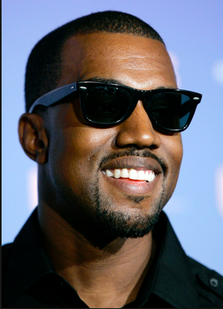

| David Kahara |
|

David Kahara was born in Compton, California, the son of a couple from Chicago, Illinois.His first name was given to him by his mother in honor of American
singer-songwriter Eddie Kendricks, of The Temptations. In 1995, at the age of eight in his hometown of Compton, Lamar witnessed his idols, Tupac Shakur and Dr. Dre, film
the music video for their hit single "California Love", which proved to be a very significant moment in his life.
He grew up on welfare and section 8 housing. As a child, he attended McNair Elementary in the Compton Unified School District.As a teenager, he went on to attend Centennial High School in Compton, where he was a straight-A student.
Leroy Omondi |
|

Leroy Omondi was born on June 8, 1977 in Atlanta, Georgia. His parents divorced when he was three years old. After the divorce, he and his mother moved to Chicago, Illinois. His father, Ray West,
is a former Black Panther and was one of the first black photojournalists at The Atlanta Journal-Constitution. Ray West was later a Christian counselor, and
in 2006, opened the Good Water Store and Café in Lexington Park, Maryland with startup capital from his son.West's mother, Dr. Donda C. (Williams) West,was
a professor of English at Clark Atlanta University, and the Chair of the English Department at Chicago State University before retiring
to serve as his manager. He was raised in a middle-class background, attending Polaris High School in suburban Oak Lawn, Illinois after living in Chicago.[17]
At the age of 10, West moved with his mother to Nanjing, China, where she was teaching at Nanjing University as part of an exchange program. According to his mother, West was the only foreigner in his class, but settled in well and quickly picked
up the language, although he has since forgotten most of it.[18] When asked about his grades in high school, West replied, "I got A's and B's. And I'm not even frontin'."[
Morris Wracci |
|

Morris Wracci was born in Des Moines, Iowa on December 8, 1973. He was mostly raised by his mother in Waterloo, Iowa, a place described by Taylor as a "hole in the ground with buildings around it."He is of German and Native American background from his father's side and Irish and Dutch on his mother's side.Taylor was raised by his single mother.
He developed a fond feeling toward rock 'n' roll after his grandmother introduced him to Elvis Presley
In 1979, He and his mother saw the science fiction series Buck Rogers in the 25th Century. Before the series, there was a trailer for the 1978 horror film Halloween. He said this "developed some sense of Slipknot in [himself]." While Halloween introduced He to masks and horror themes, Taylor's grandmother introduced him to rock music, showing him a collection of
Elvis Presley records from the mid-fifties to late seventies.
He especially found some songs like "Teddy Bear", "In the Ghetto", and "Suspicious Minds", to appeal to his interests the most, describing them as "good times."[8] Taylor also began listening to Black Sabbath at a young age, beginning with their early work